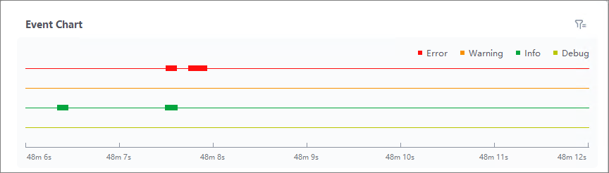

Event Diagnostic
You can view the recorded events of the selected time period in an event chart and view event levels of 6-second events.
If you select a time point in the scope-map, you can view the corresponding event chart of the diagnostic events recorded in 6 seconds.

Figure 1 Event Chart|
Operation |
Description |
|---|---|
|
Zoom In/Out |
Scroll the mouse to zoom in/out the X axis (timeline) of the event chart. |
|
Adjust Timeline |
Right-click and drag the cursor on the event chart to view the events before/after the current timeline. |
|
View Details |
Move the cursor on an event point (rectangle in red, orange, green, or yellow) to view the log information. For details, see Log Management. |
|
Filter by Level |
Click |
 to filter the events by Error,
Warning, Info, and Debug.
to filter the events by Error,
Warning, Info, and Debug.Click to select an event point in the event chart, the corresponding event in IO waveform will also be selected. For details, seeIO WaveForm Detection.